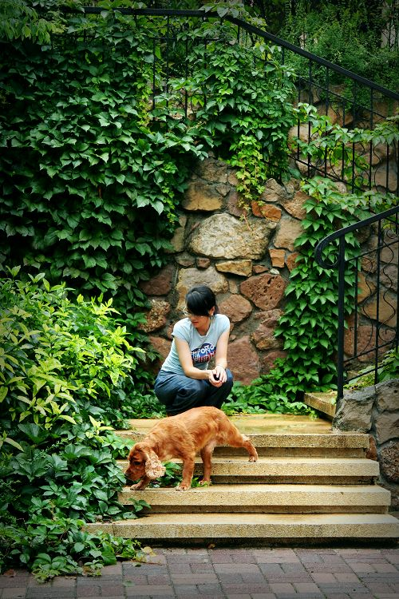
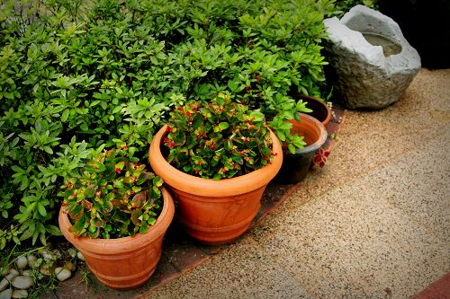

patron tequila 献给夏季的暴雨天。
听着这首歌驾驶着奥特曼在暴雨里，真TM过瘾！
patron：早期昂贵的龙舌兰酒的著名品牌。
tequila：是一种蒸馏酒，龙舌兰，听说这酒不能纯喝，需加柠檬和盐。
Let's go!
Hey!
What's happenin'?
What you drinkin' tonight girl?
Drinkin' tonight with me!
Put your drinks up!
(Chorus-Aria & Lil' Jon)
Hey girl
Where's your drink?
We goin' all get real drunk tonight
Hey girl
I got bud we can all get fucked up tonight (get fucked up tonight)
By the end of the night
Imma have you drunk and throwing up (hey! )
By the end of the night
Imma have you so fucked up! (have you so fucked up)
(Verse-Chelsea & Lil' Jon)
They said what you drinkin'? (what you drinkin'?)
Let me buy you a couple of rounds
And I said what you thinkin'? (yeah! )
I ain't the type of girl to get down
But I can party wit cha (uh huh)
And bring my girls aside (uh huh)
Tell the bartender bring the ice
And let 'em know I'm on Patron
(Chorus-Aria, with ad libs by Chelsea & Lil' Jon)
I'm on Patron, Tequila
I'm drunk on Margarita (on Margaritas)
That Patron, Tequila (that Patron)
Me and my mamacita (yeah! ) (me and my mamacita)
Hey girl (hey girl)
Where's your drink?
We goin' all get real drunk tonight (get real drunk tonight) (real drunk tonight)
Hey girl
I got bud we can all get fucked up tonight (get fucked up tonight) (yeah)
By the end of the night
Imma have you drunk and throwing up (hey! ) (throwing up)
By the end of the night (oohh)
Imma have you so fucked up! (so fucked up! )
(Verse-Lauren & Lil' Jon)
And now the parted heated
'Cuz I got a hot girl in the club
I'm feelin' so conceited (yeah! )
'Cuz everybody is giving me love (uh, uh)
But hold up, wait a minute (uh huh)
'Cuz my cup is going empty
I need someone to refill me
I'm trynna to get drunk (me too)
(Chorus-Aria, with ad libs by Lauren & Lil' Jon)
I'm on Patron, Tequila (yeah, yeah)
I'm drunk on Margarita
That Patron, Tequila (yeah, yeah)
Me and my mamacita
Hey girl (hey girl)
Where's your drink?
We goin' all get real drunk tonight (get real drunk tonight)
Hey girl
I got bud we can all get fucked up tonight (get fucked up tonight)
By the end of the night
Imma have you drunk and throwing up (hey! ) (throwing up)
By the end of the night
Imma have you so fucked up! (so fucked up! )
(Bridge-Aria, Lil' Jon, Chelsea & Lauren)
Who wanna get fucked up? (I do, I do)
Who wanna get fucked up? (I do, I do)
Who wanna get drunk? (me) (me)
Who wanna get drunk? (I'm already drunk) (me)
Who wanna get fucked up? (haha) (I do, I do)
Who wanna get fucked up?(I ain't stopping them) (I do, I do)
Who wanna get drunk? (me)
Who wanna get drunk? (let's have another one)
(Chorus-Aria, Lil' Jon, Chelsea & Lauren)
I'm on Patron, Tequila
I'm drunk on Margarita
That Patron, Tequila (yeah, yeah)
Me and my mamacita (put your drinks up! )
Hey girl (hey girl)
Where's your drink?
We goin' all get real drunk tonight
Hey girl
I got bud we can all get fucked up tonight
By the end of the night (repeating Aria)
Imma have you drunk and throwing up (repeating Aria)
By the end of the night (repeating Aria)
Imma have you so fucked up! (Imma have you so fucked up! )
(Lil' Jon)
Put your drinks up!
Put your drinks up!
Put your drinks up!
Put your drinks up!
(Aria)
I'm on Patron, Tequila
I'm drunk on Margarita
That Patron, Tequila
Me and my mamacita
我爱下雨天。

雨停了。

这张照片专为蚊子拍摄。

两周前的花谢了。

头上长犄角的小奥特曼。